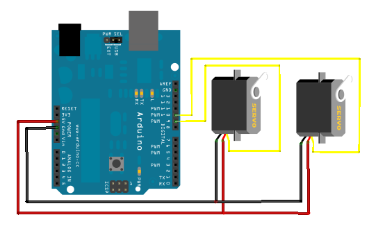

Laser Pointer Controlled with a PC Mouse
So vacations are on, and having been nelecting my old pal, the arduino for a long time I decided to implement something on it.
I had a servo motor lying around, and wanted to use it, to control the direction of a laser pointer, however I needed 2, inorder to control motion in the both the axis. A quick trip to Lajpat Rai, the local electronics market in Delhi, and I had a new shining mini-servo!
The old one looked a little more robust and so I decided to use it as a 'Base', which was created with a perfboard! The second servo motor was mounted on the base with double sided tape, here is the picture of the setup.

Ofcourse the servos 'Pulse' pins were wired up with the arduino PWM pins(9 and 10). So the hardware was ready, next was the software.

To take the coordinates from the laptop and send them to the Arduino through serial over UART, I used a small python script. The Python script uses the Xlib standard library to get the laptop coordinates. Serial connection is established using the standard pyserial library. For each coordinate python sends two characters to the Arduino, the first one is an alphabet that tells the arduino if it is the X or the Y coordinate. The second, here is the most interesting part, is the mouse coordinate that is scaled down to '127'(Max value of a char) and typecast from integer to char and sent over to the Arduino. At the Arduinos end, it again typecasts the value back to an integer and scales it upto 180 (to get the direction of the servo in degrees). Basically, here im fooling python to send coordinates as a single character. I had to do this as I wanted the servos to respond to the coordinates as quickly as possible, in case I had sent 3 characters to the Arduino over UART for the servo angle, I would have spent as much as 3x the bus cycles required to send a single coordinate, thus greatly reducing the response time.
The project is simple and quick to implement, however, trust me it promises hours of endless fun. If you have 2 spare servos lying around, do implement it. Though the project does what it is intended to, I plan to take it further in the future sometime, probably port it to the MSP430 or create a 'text projector' with the BeagleBone Black. Take a look at the video of it in action. :)
Featured on: